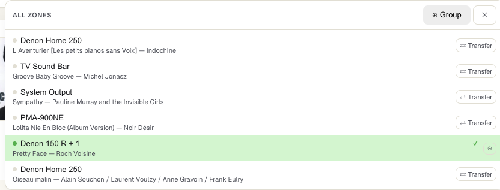
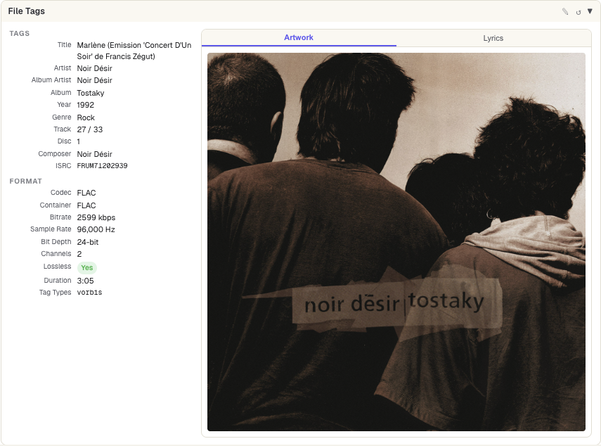
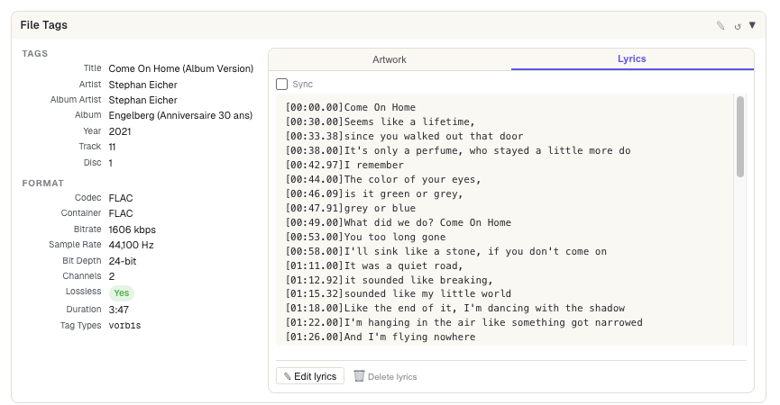
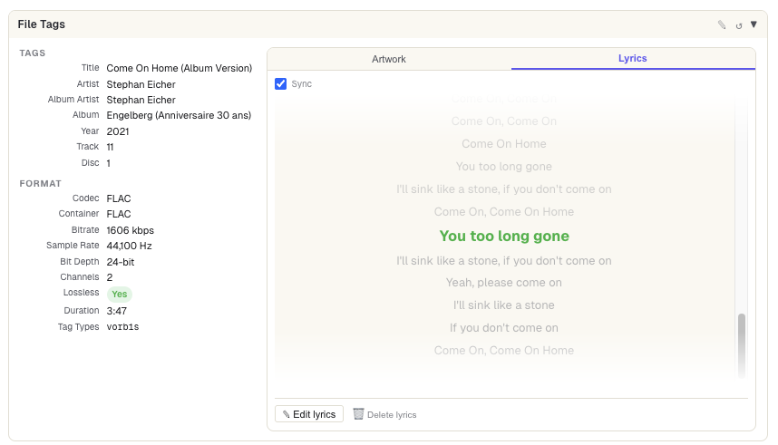
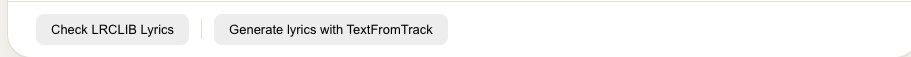
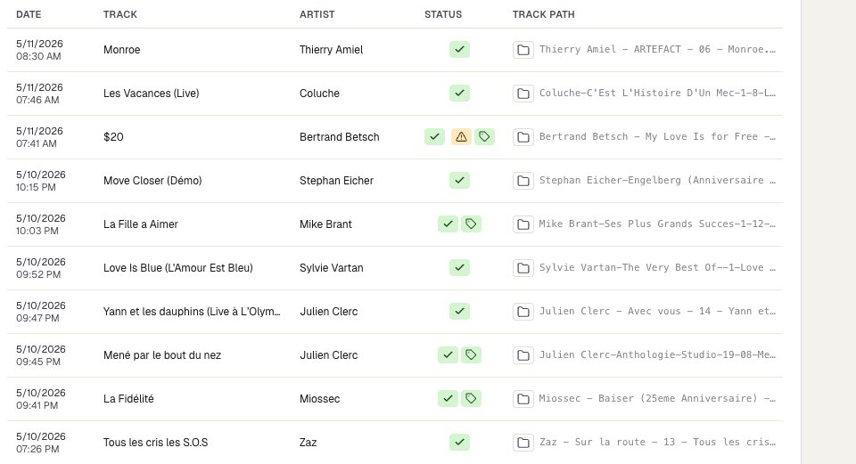
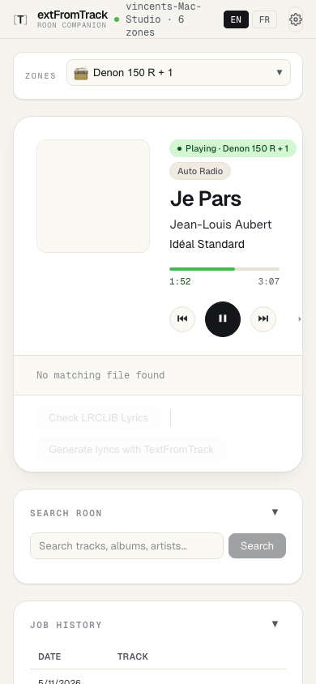

Getting Started
TextFromTrack works as a Roon Extension. Open the web app in any browser — your Roon player state syncs in real time.
Install the Electron App
Download the macOS app and launch it. It runs silently in the system tray — click the tray icon to access controls. The server starts automatically on login.
Enable the Extension
In Roon, go to Settings → Extensions and enable "TextFromTrack Roon Companion".
Open the Web App
Navigate to the server's URL in your browser. The interface loads instantly with your current Roon playback state.
Scan Your Library
Go to Configuration → Library Settings, add your music root path(s), and click Save & Rescan.
Generate Lyrics
Play a track in Roon — the companion auto-matches the file and lets you fetch or generate synced lyrics in one click.
Top Bar
The top bar gives you quick access to language switching, Roon connection status, and the configuration panel.

The top bar — always visible across the full width of the app
| Element | Description |
|---|---|
| 🎵 Logo / Title | App name — clicking does nothing, it's purely decorative. |
| EN / FR toggle | Switch the entire interface between English and French. The preference is saved in your browser. |
| Roon status dot | Green = connected and authorized. Red = disconnected or not yet authorized. Hover for details. |
| ⚙️ Configuration | Opens the configuration drawer on the right side of the screen. |
Zone Selector
The zone bar sits just below the top bar. It shows the currently active Roon zone and lets you switch between zones or transfer playback.

Zone dropdown — all Roon zones with currently playing track shown
-
➜Click the zone button (e.g. "📻 Denon 150 R + 1") to open the zone picker.
-
➜Select a zone to switch the companion's focus to that output. All now-playing data updates immediately.
-
➜⇄ Transfer button moves playback from the current zone to the selected zone.
-
➜⊕ Group button adds another zone into the current group for synchronized playback.
Now Playing
The main card shows everything about the track currently playing on your selected Roon zone — artwork, controls, progress, and volume.

Now Playing — album art, track info, transport controls, and volume
Album Artwork
Displayed from Roon's own artwork store. Updates as soon as the track changes.
Transport Controls
Previous, Play/Pause, Next. Clicking these sends commands directly to your Roon zone.
Repeat & Shuffle
Toggle repeat (off → all → one) and shuffle modes. State mirrors Roon in real time.
Volume Control
+/− buttons adjust volume by the configured step (default 3). Shows master volume with a visual bar.
Progress Bar
Scrubable progress bar. Click anywhere on the bar to seek to that position in the track.
Artist / Album Links
Click the artist or album name to immediately search for that artist/album in the Search panel.
Local File Match
When a track is playing, the companion searches your scanned music library for the corresponding local file. This is necessary before reading or writing tags.

Local File Match strip — shows matched file with confidence score badges
The match strip shows the matched file path, format details (bitrate, duration, size), and a row of confidence score badges:
| Badge color | Meaning |
|---|---|
| Green | High confidence — exact or near-exact match on this field. |
| Yellow | Medium confidence — partial match. Review before proceeding. |
| Red | Low or zero confidence on this field. |
| Gray | Field matched by alternative method (ISRC, duration fingerprint). |
File Tags
Once a local file is matched, the File Tags card reads and displays the audio file's embedded metadata tags — and lets you edit them.

Artwork tab — embedded cover art

Lyrics tab — embedded LRC/lyrics

Sync mode — highlights the current line as the track plays
Tags Tab
Displays the full set of metadata tags: Title, Artist, Album Artist, Album, Year, Genre, ISRC, Composer, MusicBrainz IDs, and format info (codec, bitrate, sample rate, bit depth, channels).
Artwork Tab
Shows the embedded album cover art, if any.
Lyrics Tab
Shows any lyrics currently embedded in the audio file (plain text or LRC format). You can also:
-
✎Edit lyrics — click "Edit lyrics" to manually type or paste lyrics into the file.
-
🗑Delete lyrics — remove the embedded LYRICS tag from the file entirely.
FLAC (Vorbis Comments) and MP3 (ID3v2 tags). Other formats are read-only.Lyrics Actions
Two primary actions let you fetch synced lyrics from external sources. Each saves the result as a .lrc sidecar file and optionally embeds it into the audio file.

The two lyrics action buttons
Search LRCLIB
Searches the free, community-maintained LRCLIB database for synced lyrics. Instant and requires no account. Results appear in the LRCLIB panel below.
Generate with TFT
Submits the audio file to the TextFromTrack AI service for transcription. This generates synced lyrics from the audio itself — useful when no lyrics exist in the database.
Options available before generating
| Option | Description |
|---|---|
| Force re-transcribe | Deletes existing .lrc and re-submits even if lyrics already exist. The old LYRICS tag is renamed to LYRICS.ORG as a backup. |
| Embed [LYRICS] tag | After saving the .lrc file, also writes the LRC content into the audio file's LYRICS tag (FLAC / MP3 only). |
| Save .org backup | Before any write, creates a .flac.org / .mp3.org backup of the original file. |
| Save LRC beside source | Saves the .lrc sidecar next to the audio file on disk. |
LRCLIB — Contribute Back
If you've obtained synced lyrics for a track not yet in LRCLIB, you can contribute them back anonymously with a single button. The app performs a Proof-of-Work challenge to prevent spam.
Search Panel
The search panel lets you manually look up lyrics in the LRCLIB database by artist, track title, and album.

Search panel — auto-populated with the current track's metadata
-
1Fields are auto-filled from the currently playing track. You can edit them freely.
-
2Click Search to query LRCLIB. Results appear as cards with a preview of the lyrics.
-
3Select a result to save it as the track's lyrics. The LRC file is written and the tags card updates.
Job History
Every lyrics request — whether via TextFromTrack AI transcription or LRCLIB — creates a job. The history table tracks all past requests with their status, credit cost, and actions.

Job history — per-job status, credits charged, and per-row lyrics actions
| Column | Description |
|---|---|
| Date | When the job was submitted. |
| Track / Artist | The track metadata at submission time. |
| Status | Done Processing Error — live status updates while jobs run. |
| Credits | Credits charged for TFT jobs. Shows LRCLIB badge for free LRCLIB results, or Cache for cached hits (0 credits). |
| Track path | Filename of the source audio file. Includes action buttons for done jobs: 📁 Reveal in Finder — opens the enclosing folder. 📋 Copy lyrics — copies the full LRC text to the clipboard. 👁 View lyrics — opens a scrollable lyrics preview modal with a copy button. |
| 🔄 Retry | Deletes the existing LRC and re-submits the job. Useful when timestamps were unavailable (fallback model was used). |
Configuration
Click the ⚙️ Configuration button in the top bar to open the settings drawer. It has two sections: App Preferences and Library Settings.
TextFromTrack API Key
The TFT transcription feature requires a Personal Access Token (PAT). You can enter it directly in the Configuration drawer — no file editing required.
-
1Create a PAT at app.textfromtrack.com ↗
-
2Click ⚙️ Configuration in the top bar, then open the TextFromTrack API Key section
-
3Paste your key in the field and click Save
-
4The status badge turns green and the TFT panel shows your credit balance — you're ready to go

Configuration drawer — App Preferences and Library Settings
App Preferences
| Setting | Description |
|---|---|
| Volume step (± per click) | How many Roon volume units each +/− button press changes. Default: 3. |
| Player refresh interval | How often the progress bar and volume update. Lower = more responsive, higher = less network traffic. Options: 500ms, 1s, 2s, 3s, 5s, or a custom value. |
| System Info | Click Load in the Diagnostics section to fetch live server metrics: version, Node.js version, platform, uptime, server RAM, userData folder size, and LRC cache size. Data refreshes on each click. |
Library Settings
| Setting | Description |
|---|---|
| Music Roots | One or more local paths to your music folders. The scanner recursively indexes all FLAC and MP3 files. |
| Embed [LYRICS] tag by default | When enabled, LRC content is also written into the file's LYRICS tag on every save (both LRCLIB and TFT results). |
| Save .org backup before embedding | Creates a .flac.org / .mp3.org backup before any tag write. Requires "Embed LYRICS tag" to be enabled. |
| Save LRC file next to audio source | Saves a .lrc sidecar next to the audio file. Note: Roon does not read LRC files natively. |
| Save & Rescan | Applies the settings and triggers a full library rescan. This may take a few minutes for large libraries. |
.lrc sidecar files. To use synced lyrics within Roon, enable "Embed [LYRICS] tag" — this writes the LRC into the audio file's tag, which Roon can display in compatible views.Mobile
The interface is fully responsive. On mobile devices (≤ 767px), the layout switches to a vertically stacked single-column design optimized for thumb navigation.

Mobile layout — compact vertical design for phones and tablets
Compact Player
Album art, track title, and controls are stacked vertically for easy thumb access on small screens.
Touch-Optimized
All tap targets are sized to at least 44×44px. Buttons have generous padding for error-free tapping.
Remote Control
Use your phone as a full Roon remote — control volume, skip tracks, switch zones, and fetch lyrics from the couch.
QR Code Access
In the Electron tray menu, click Show QR Code for Phone… to display a scannable QR code that opens the web app on your phone without typing the URL.
Remote Backend
The macOS Electron app can automatically discover and connect to a TextFromTrack backend running on another machine on your local network, using mDNS (Bonjour) zero-configuration networking.
How it works
When the Electron app starts, it listens for other TextFromTrack instances advertising themselves via mDNS on the local network. If it finds one (e.g. a backend running on a headless Mac mini or a NAS), a dialog offers to connect to it instead of starting a local server.
-
1Start TextFromTrack on the host machine (the one with the music files). It advertises itself on the LAN via Bonjour as
_textfromtrack._tcp. -
2On your laptop, open the Electron app. It scans the LAN for 3 seconds. If a backend is found, a dialog asks: "A TextFromTrack backend was found at [machine name]. Connect to it?"
-
3Click Connect. The app opens the remote backend's UI in your browser. All tray menu actions (Open UI, Roon status…) now point to the remote machine.
-
4The choice is remembered in
electron-prefs.jsoninside your userData folder. Next launch reconnects automatically without scanning again.
Tray menu — Remote mode
| Item | Action |
|---|---|
| Remote: [machine name] | Status label — shows which backend you are connected to (non-clickable). |
| Open Remote UI | Opens the remote backend's web interface in your default browser. |
| Switch Backend… | Re-scans the LAN for 3 seconds and shows a dialog to pick a different backend or stay on the current one. |
| Use Local Backend | Disconnects from the remote backend, starts the local server, and opens the local UI. Clears the saved remote preference. |
Tray menu — Local mode
| Item | Action |
|---|---|
| Open UI | Opens the local web interface (http://localhost:3888) in your default browser. |
| Open on Network | Opens the LAN-accessible URL (http://[local-IP]:3888) — useful for sharing the link with other devices. |
| Show QR Code for Phone… | Displays a scannable QR code pointing to the local LAN URL — scan with your phone to open the UI instantly. |
| Switch Backend… | Scans the LAN and offers to connect to a discovered remote backend. |
| About TextFromTrack… | Shows app version, release date, Electron and server RAM usage, userData disk size, and LRC cache stats. |